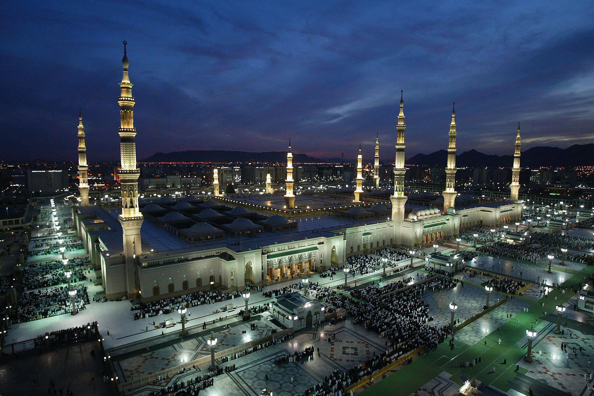

 Al-Madinah Al-Munawarah is the second holy city to Muslims after Makkah Al-Mukkaramah. It has also got many other names such as Taibah, Yathrib, the City of the Messenger, and Dar Al-Hijri (i.e. Home of Immigration). It is the city whose people supported Prophet Mohammad (peace be upon him) when he immigrated to it from Makkah. It comprises the Mosque of the Prophet, his grave, the Islamic University, King Fahd Complex for the Printing of the Holy Quran and many archaeological Islamic features. The first mosque of Islam is also located in Madinah and is known as Masjid Al Quba. Madinah (Almadina Al-Munawara) the light city is the city of the Prophet Muhammad (saw) and also his burial place. It was the first Islamic City to support the Prophet Muhammad, and it joined him in fighting decisive battles which were instrumental in the victory of Islam and its subsequent spread. This is the city of the "Ansaar" (Supporters) and their brothers the "Muhajireen" (Emigrants), who together formed the first Islamic army which entered Makkah in triumph eight years after the Prophet's "Hijrah" (Migration). It was a city which loved the Prophet, and which he in turn loved. On its soil he built his sacred mosque, and it was here that he was buried.
you can vist this web page to more information click here